1. 멀티모달 예제 “Image-to-Text (이미지 투 텍스트)”
결과 : API 호출 후 URL 이미지 설명
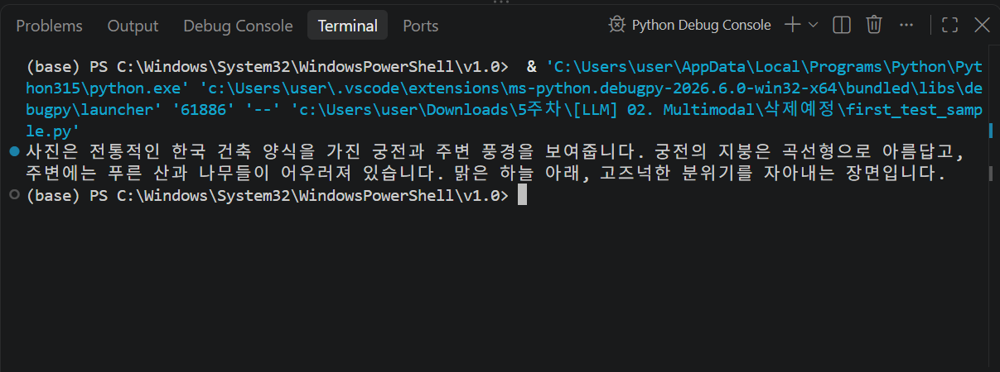
코드 : API 호출 후 URL 이미지 설명
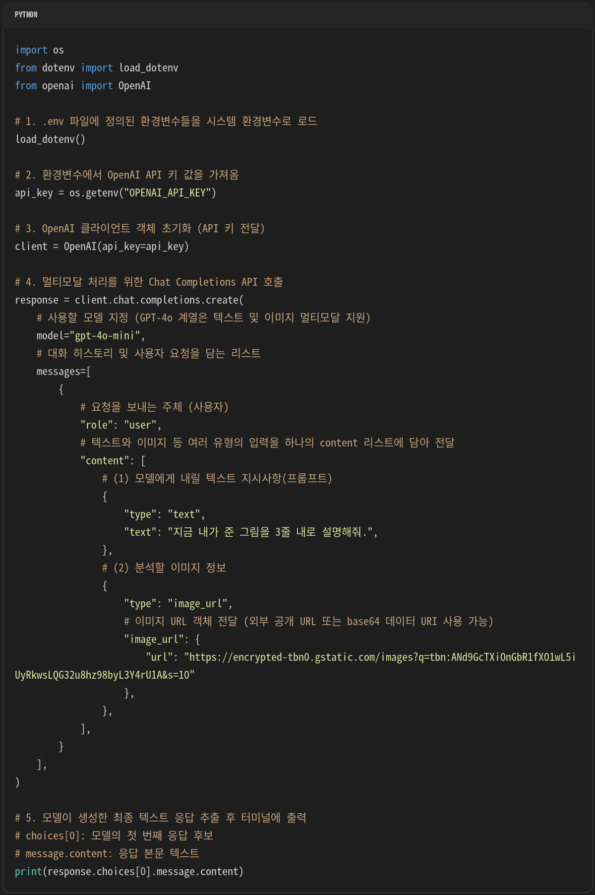
PYTHON 코드
2. 멀티모달 예제 “Image-to-Text (이미지 투 텍스트)”
예상 : API 호출 후 프롬프트로 출력된 이미지

결과 : API 호출 후 프롬프트로 출력된 이미지
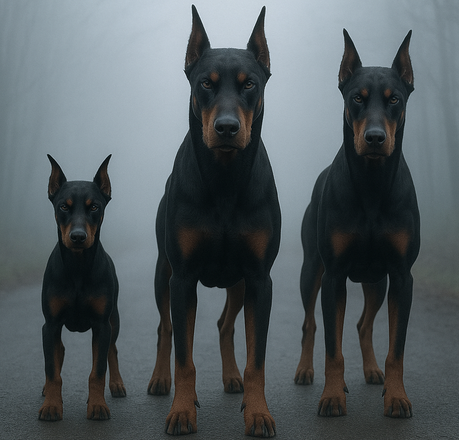
코드 : API 호출 후 프롬프트로 출력된 이미지
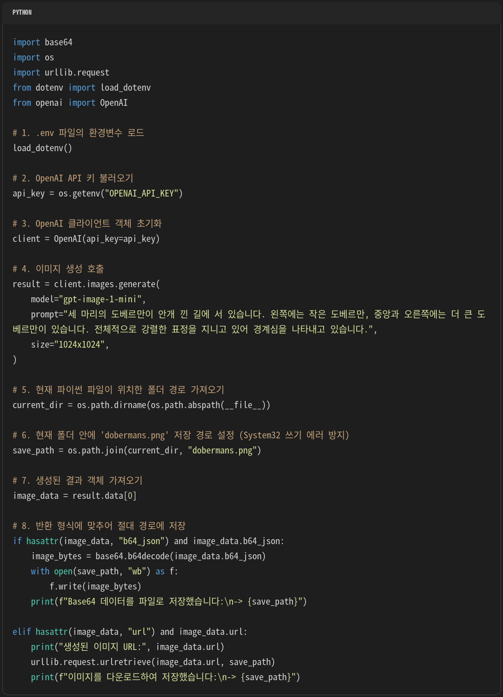
PYTHON 코드
3. 멀티모달 예제 “Image-to-Image (이미지 투 이미지)”
결과 : API 호출 후 프롬프트로 출력된 이미지

코드 : API 호출 후 프롬프트로 출력된 이미지 투 이미지
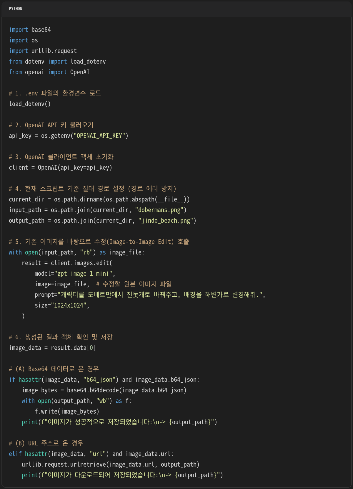
PYTHON 코드
결과 : 이미지 흑백 전환하기

코드 : 이미지 흑백 전환하기
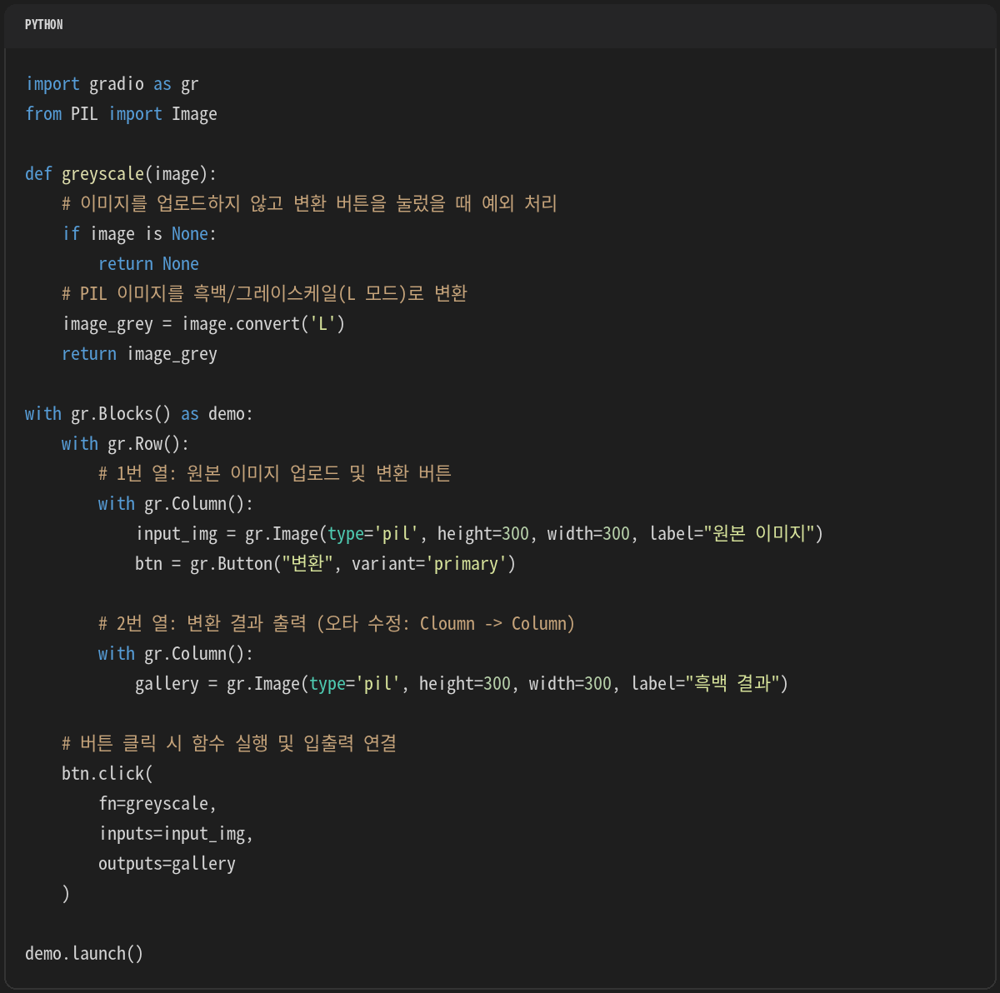
PYTHON 코드
결과 : 이미지 회전 적용하기

코드 : 이미지 회전 적용하기
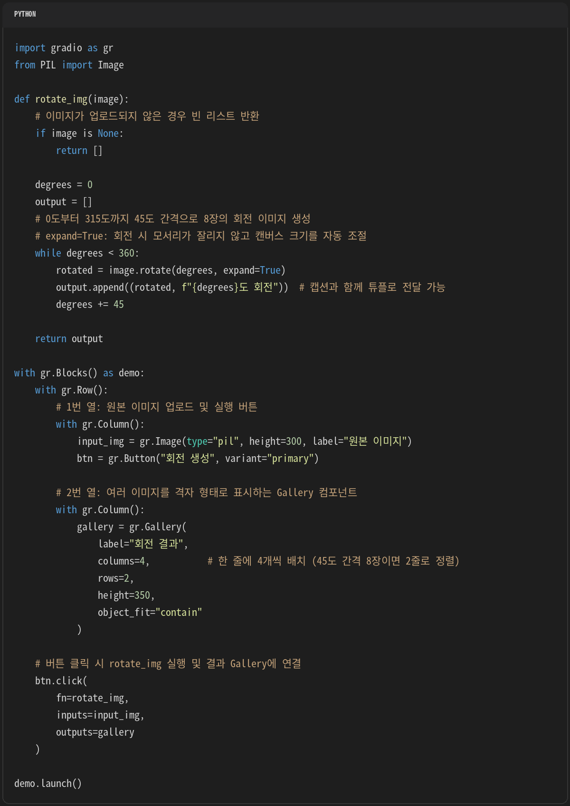
PYTHON 코드
결과 : 그림판에 그린 손그림을 프롬프트와 이미지로 출력
그림판에 손으로 그린 그림

출력된 결과물(gpt-image-1-mini)

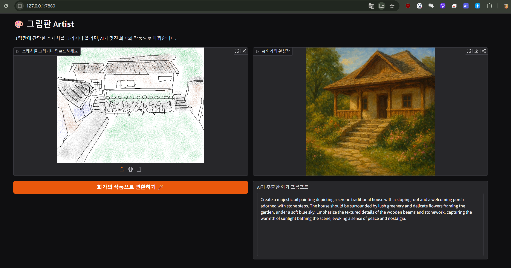
코드 : 그림판에 그린 손그림을 프롬프트와 이미지로 출력
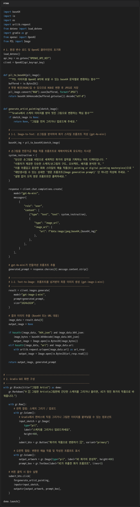
PYTHON 코드
코드 : 그림판에 그린 손그림을 이미지로 출력 (GPT-5.6 Luna)
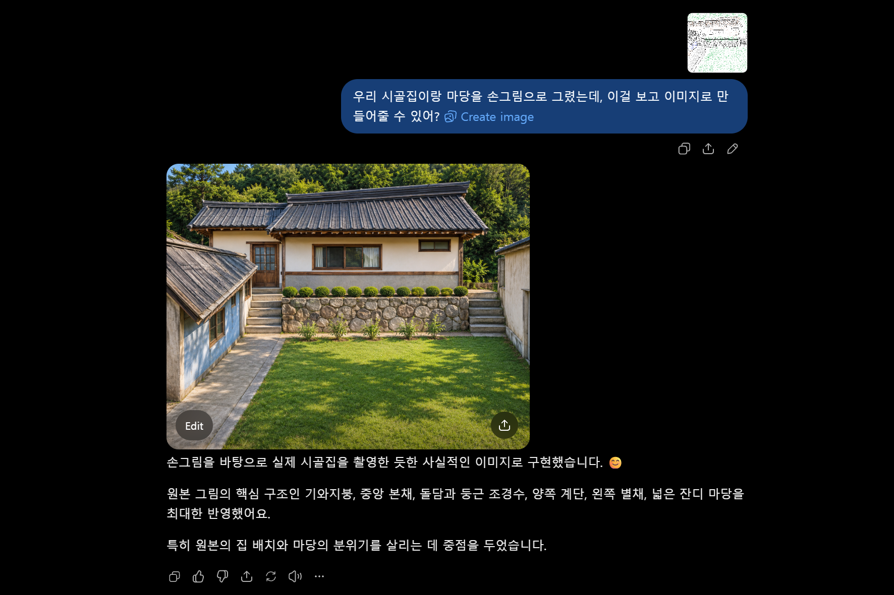

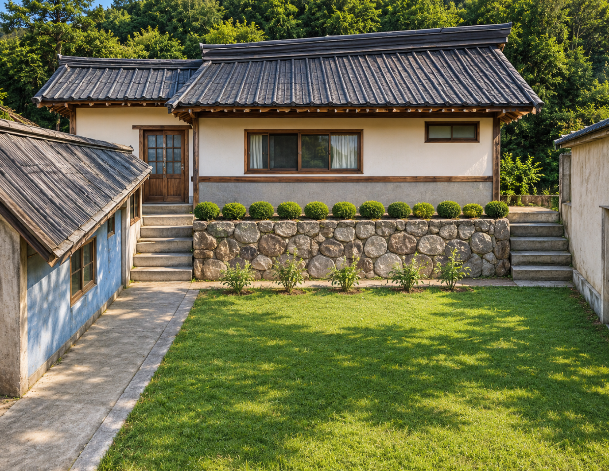
번외 : 그림판에 그린 손그림을 프롬프트와 이미지로 출력

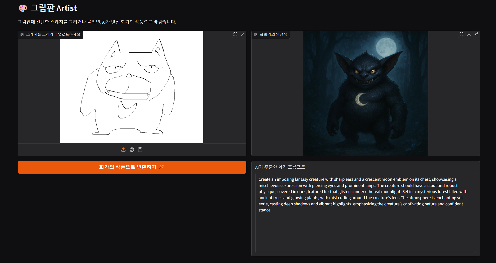
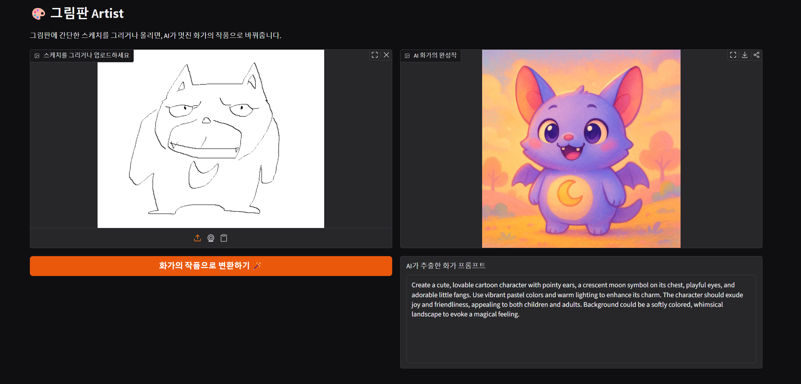